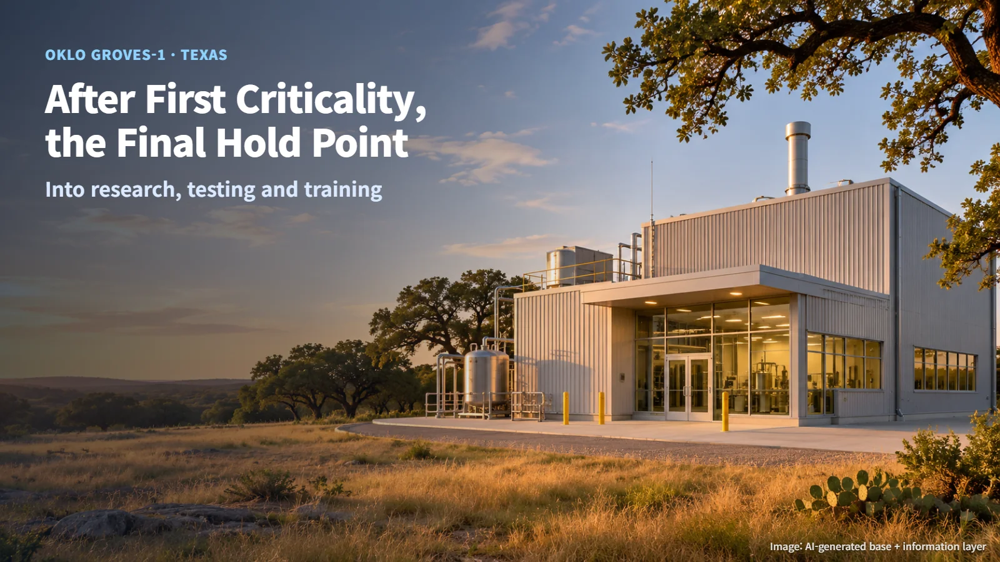
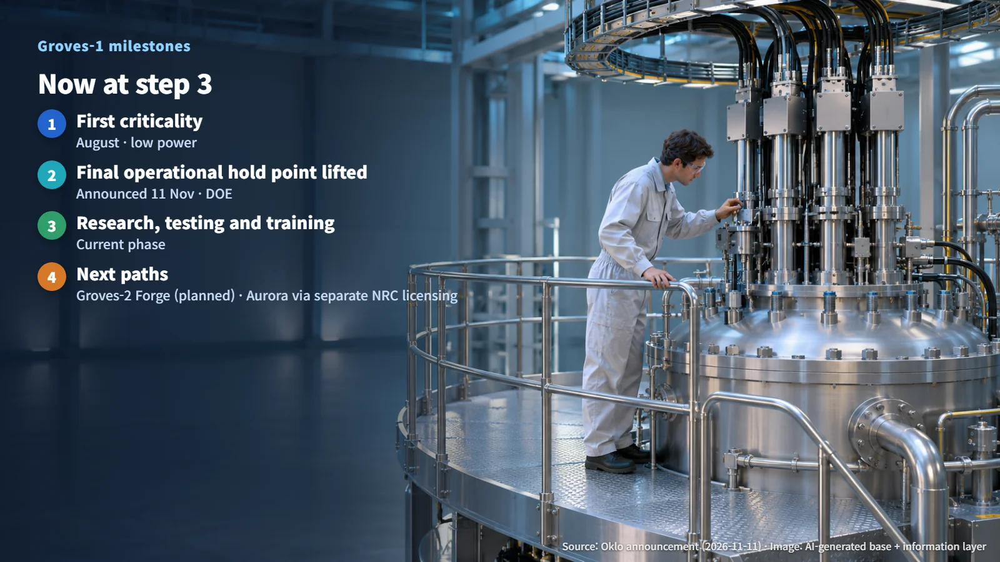
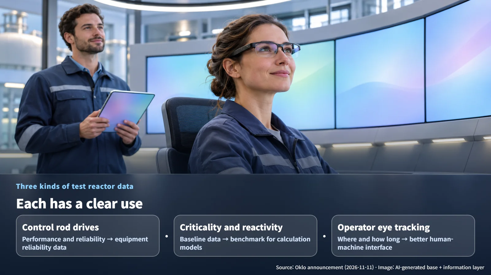

United States · Oklo · Test Reactors
After First Criticality, the Final Hold Point: Oklo's Groves-1 Test Reactor Moves to Research and Training
After low-power first criticality in August, DOE lifted Groves-1's final operational hold point. The test reactor now moves into research, testing and workforce training.
Headlines about a reactor "reaching first criticality" are easy to spot. What happens next gets far less attention. After criticality, a reactor still advances one checkpoint at a time, confirming results at each defined point before moving on to the next mode of operation. Oklo's Groves-1 test reactor has just cleared that next gate. Our previous post looked at the readiness review a demonstration reactor goes through before startup; this one follows the same DOE demonstration pathway to see what happens after startup.

Hold Points After First Criticality: Why Approval Comes in Stages
On 11 November, Oklo announced that the US Department of Energy (DOE) had lifted the final operational hold point for the Groves-1 isotope test reactor near Lockhart, Texas. Groves-1 operates under DOE's Reactor Pilot Program, and with this step it moves into a research, testing and workforce training phase.
Two terms help make sense of the news. Criticality is the state in which neutrons released by fission go on to cause further fission, so the chain reaction sustains itself at a steady level. Groves-1 first reached that state at low power in August. A hold point is a defined stop in a sequence of work: the team pauses, checks the results, and receives approval before going further. Think of a mountain trail with staffed shelters along the way, where hikers complete a check at each shelter before setting out on the next stretch.
Laid out in order, the stages look like this:
1. First criticality: confirming at low power that the chain reaction sustains itself for the first time (August) 2. Final operational hold point lifted: DOE allows the transition to the next phase of operation (announced 11 November) 3. Research, testing and workforce training operations
Counting by calendar month, roughly three months separated first criticality in August from this November milestone. Splitting the work into stages lets operators widen the scope of operation on the strength of what each earlier stage has already confirmed. Each approval rests on evidence gathered in the step before it, so the reactor's operating envelope grows in measured increments, and every hold point leaves a record that reviewers can return to later. With this clearance, Groves-1 has moved from "confirming the chain reaction" to "learning and training with the reactor itself."

What a Test Reactor Collects: Control Rods, Reactivity and Operators' Eyes
Oklo described a test plan with three strands, and each produces data with a clear use. Together they cover the machine, the physics and the people who run the reactor.
The first is testing the performance and reliability of the control rod drive mechanisms. Control rods are rods that absorb neutrons to regulate the strength of the chain reaction, and the drive mechanisms are the machinery that moves them to set positions. Recording how precisely and consistently they move during real operation yields reliability data that feeds into design choices and maintenance intervals.
The second is gathering baseline criticality and reactivity data. Reactivity is a measure of how far a reactor sits from criticality, in other words whether the chain reaction is tending to grow or to shrink. Values measured in an operating reactor become reference points for checking design calculation models. The closer measurements and calculations agree, the more confidently engineers can rely on those calculations for the next design.
The third is recording where operators look. During a recent startup, operators wore eye-tracking glasses that logged where their gaze went and for how long, and Oklo said it will use this information to improve the human-machine interface. Knowing which screens hold an operator's attention makes it possible to shape the control room around how people actually behave, for example by placing must-see information where it is easiest to find.

The Next Facility and Commercial Licensing: Groves-2 Forge and Aurora's Separate Path
Oklo plans to use Groves-1 as an operating platform to prepare the people, systems and procedures for further nuclear projects. Lessons from its operation are set to feed into Groves-2 Forge, a facility that will combine reactor irradiation with hot cell processing. A hot cell is a heavily shielded workroom where radioactive material is handled with remote manipulators from behind thick walls. Groves-2 is a facility in the planning stage, with initial goals of isotope separation, recovery, packaging and transport, and production of lutetium-177, a medical isotope.
From here the story follows two tracks. Groves-1 carries out its testing and training under DOE's Reactor Pilot Program. The commercial Aurora powerhouse goes through a separate licensing process with the Nuclear Regulatory Commission (NRC). Licensing and deployment for Groves-2 and Aurora also proceed on their own schedules. The two tracks run side by side, and the staff, procedures and measured data built up at the test reactor form the groundwork for preparing the facilities that follow.
The next things to watch are the publication of the operational test scope, performance data and workforce qualification procedures, along with licensing progress for Groves-2 and Aurora.
Criticality is the starting line, and hold points are how a reactor builds up verified results one step at a time. The next time you see a "first criticality" headline, it is worth asking which hold point that reactor is heading toward next.